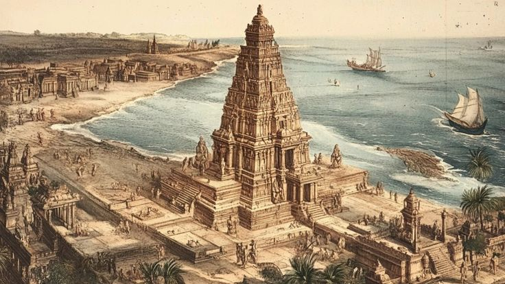
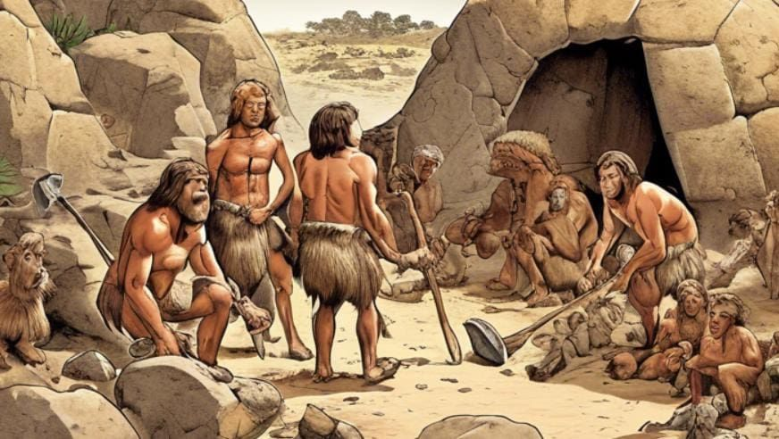
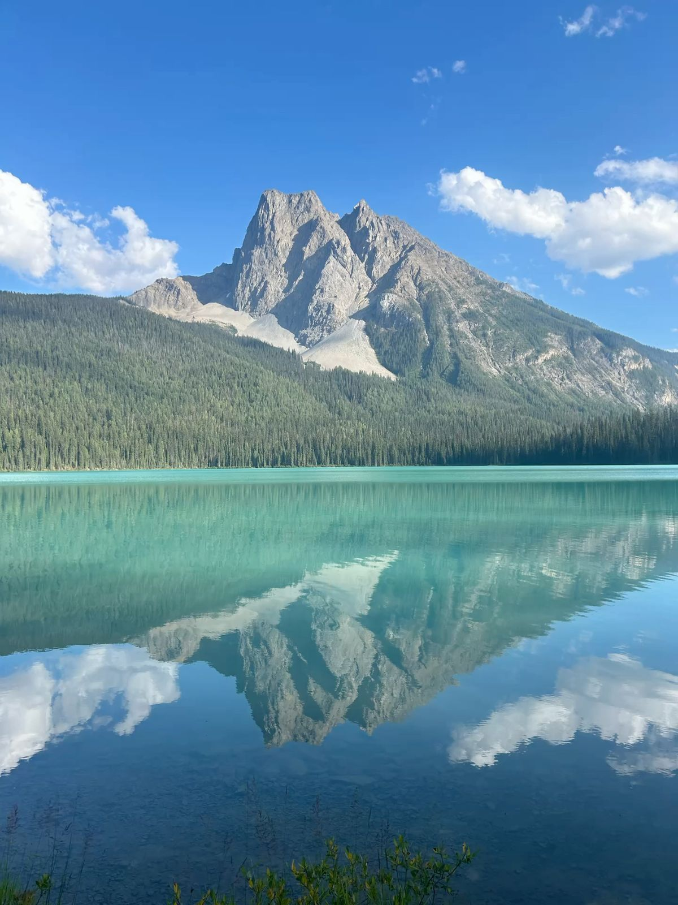
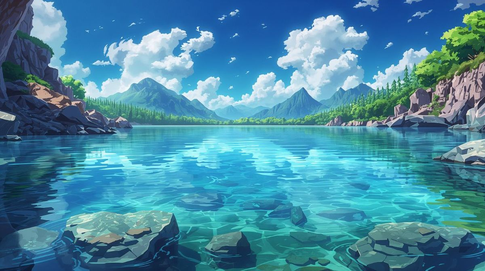

Temple
Zephira is home to ancient temples adorned with glowing crystals, representing the harmony between nature and the cosmos.
History of Old Age People
The history of Zephira spans millennia, featuring ancient civilizations who mastered energy and left remarkable ruins around the planet.
Happy Life
Communities in Zephira celebrate art, music, and shared happiness within a balanced and sustainable environment.
Beaches
Zephira’s beaches glow softly at night thanks to bioluminescent marine life thriving on turquoise sands and gentle waves.
Mountains
The breathtaking mountains of Zephira are known for their crystal peaks and diverse ecosystems nestled within lush forests.
Rivers
Clear, winding rivers nourish Zephira’s ecosystems and provide stunning landscapes for inhabitants and visitors alike.
